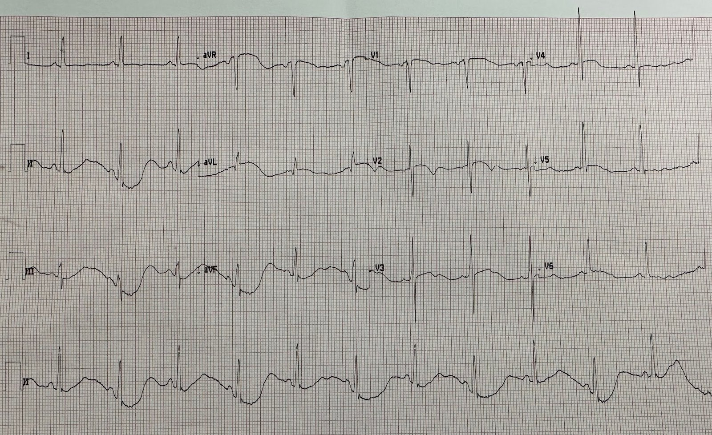
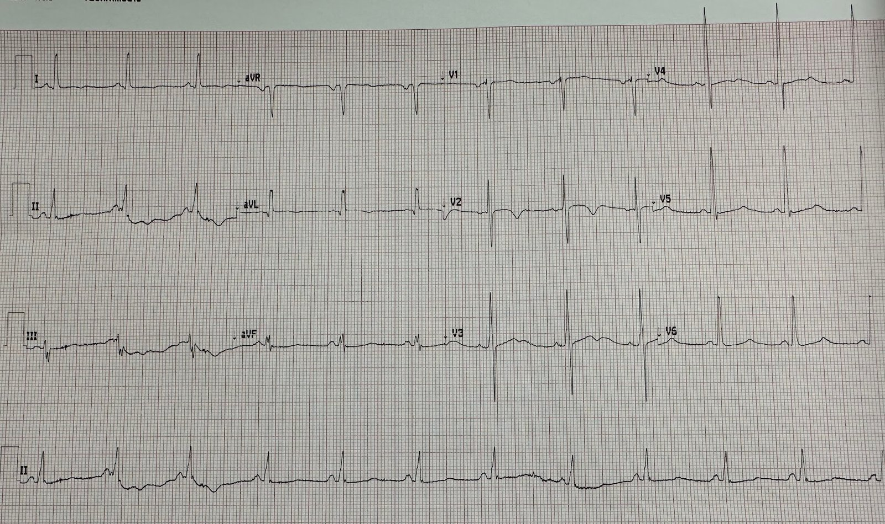
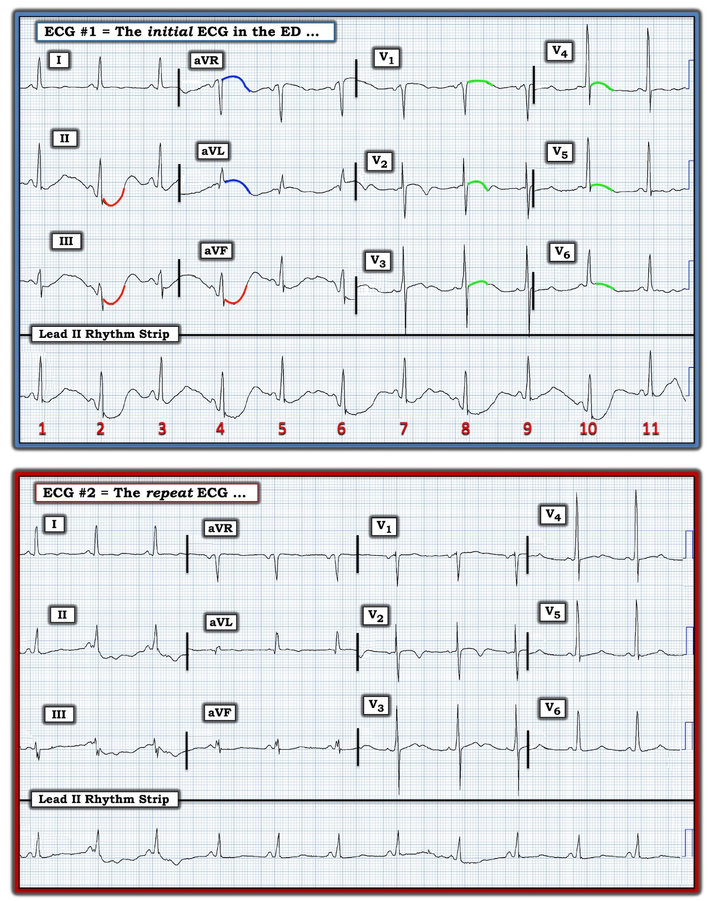
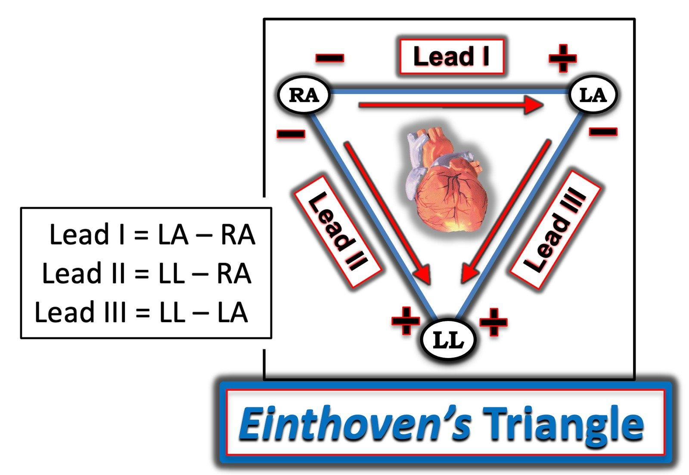

17/01/2023 — Một người 60 tuổi đau ngực
Bản dịch tiếng Việt của bài "A 60 year old with chest pain" – Dr. Smith’s ECG Blog. Giữ nguyên toàn bộ 5 hình ảnh của bản gốc.
Một người 60 tuổi đau ngực đến khoa cấp cứu (ED).
Đây là điện tâm đồ đầu tiên của ông ấy:


Bạn nghĩ gì?
Trông kỳ quái, phải không? Có rất nhiều bất thường ST-T, nhưng chúng không giống bất kỳ hình ảnh quen thuộc nào.
Bất cứ khi nào bạn thấy một điện tâm đồ kỳ quái, hãy nhìn các chuyển đạo I, II và III. Xem có chuyển đạo nào KHÔNG trông kỳ quái hay không. Trong ca này, chuyển đạo I không trông kỳ quái, nhưng tất cả các chuyển đạo khác thì có.
Tôi lập tức nhận ra đây là nhiễu do mạch đập (pulse tapping artifact). Hiện tượng này xảy ra khi một trong các điện cực chi được đặt gần một động mạch và bị ảnh hưởng bởi hoạt động cơ học của động mạch, hoặc có thể bởi sự dẫn điện của máu trong động mạch.
Vì chuyển đạo I trông tương đối bình thường, điều đó có nghĩa là các điện cực tay phải và tay trái hẳn là ổn. Chính điện cực chân trái mới là điện cực bất thường.
Một điện cực bị ảnh hưởng đơn lẻ sẽ ảnh hưởng đến TẤT CẢ 11 chuyển đạo còn lại!! Vì vậy nếu điện cực chân trái bị ảnh hưởng, tất nhiên nó sẽ ảnh hưởng đến các chuyển đạo II và III. Nhưng nó cũng ảnh hưởng đến tất cả các chuyển đạo tăng thế, vì cực trung tâm Wilson chịu ảnh hưởng của mọi điện cực, nhưng chỉ ở mức một nửa. Các chuyển đạo trước tim dùng các điện cực chi làm điện cực tham chiếu, nên chúng cũng bị ảnh hưởng, nhưng không nhiều bằng các chuyển đạo II và III.
Vì vậy tôi đề nghị kỹ thuật viên ghi lại điện tâm đồ, nhưng di chuyển điện cực chân trái.
Đây là kết quả:


Hình dạng kỳ quái đã biến mất.
Xem thêm các ca nhiễu do mạch đập động mạch tại đây.
Từ khi biết về nhiễu do mạch đập, tôi đã gặp nhiều hơn một ca mỗi tháng. Tôi tin rằng nó phổ biến hơn rất nhiều so với những gì tôi từng biết.

==================================
BÌNH LUẬN CỦA TÔI, bởi KEN GRAUER, MD (17/1/2023):
==================================
Như Tiến sĩ Smith đã nói — nhiễu do mạch đập (pulse-tap artifact) từng là một hiện tượng “mới” đối với chúng tôi (cũng như đối với hầu như mọi người hành nghề y). Điều đó không còn đúng nữa!
- Trong bài đăng ngày 5 tháng Mười Hai năm 2022 của Dr. Smith’s ECG Blog — Chúng tôi trình bày thêm 4 ca nhiễu do mạch đập (pulse-tap artifact) này. Còn nhiều ca nữa — phản ánh một hiện tượng thú vị trong y học: chúng ta trải qua nhiều năm không hề biết đến một thực thể nào đó — cho đến khi có người lưu ý cho ta. Từ đó trở đi, ta thấy thực thể này suốt — rồi cuối cùng nhận ra rằng có lẽ nó vẫn luôn ở đó, nhưng đã bị ta bỏ sót đơn giản vì ta chưa biết là thực thể ấy tồn tại …
- Dưới đây tôi dẫn các LINK tới một số ca bổ sung về các loại nhiễu khác nhau mà tôi đã gặp. Cách TỐT NHẤT để giỏi nhận ra nhiễu — là ý thức được nhiễu phổ biến đến mức đáng kinh ngạc trong thực hành — hạ thấp ngưỡng nghi ngờ của bạn khi một bản ghi vì lý do nào đó “trông lạ” — quay lại giường bệnh và NHÌN bệnh nhân (gãi, rùng mình, run, v.v. là những nguồn gây nhiễu tuyệt vời) — đặt lại các điện cực (đôi khi tốt nhất là CHÍNH BẠN tự làm việc này!) — và nhanh chóng ghi lại điện tâm đồ. Bạn sẽ ngạc nhiên vì những “sóng lệch kỳ lạ” ấy thường biến mất như có phép màu đến mức nào!
================================
LƯU Ý: Những lý do khiến tôi đặc biệt thích ca hôm nay là: i) Bệnh nhân đến viện vì đau ngực — vì vậy tầm quan trọng của việc phân biệt nhiễu với thực tế là không thể nói quá! — ii) Các sóng lệch do nhiễu trong ca hôm nay có dạng tròn, do đó không bị biến dạng rõ ràng như trong nhiều ca nhiễu khác (tức là dễ bị bỏ qua hơn!); — iii) Bản ghi lại ở bệnh nhân đau ngực này không “bình thường” — dù vậy khi ghi lại điện tâm đồ thì vẫn thấy rõ ràng là những sóng lệch rõ rệt nhất đã biến mất “như có phép màu” sau khi đặt lại điện cực chân trái; — và, iv) Bản ghi hôm nay còn cho thấy một dạng nhiễu “nhịp đôi“ kỳ quái mà tôi chưa từng thấy trước đây!
- Để cho rõ, trong Hình 1 — tôi đã ghi chú bản ghi ban đầu hôm nay, và đặt nó cạnh điện tâm đồ ghi lại.
================================
CÂU HỎI:
- Bạn có biết vì sao các sóng lệch do nhiễu lớn nhất ở điện tâm đồ #1 được tô ĐỎ không? Vì sao các sóng lệch do nhiễu nhỏ nhất được tô XANH LÁ?
- GỢI Ý: Trong phần Bình luận của tôi ở cuối trang của bài đăng ngày 26 tháng Tám năm 2022 trên Dr. Smith’s ECG Blog — tôi đã phân tích, bằng cách áp dụng tam giác Einthoven, cơ sở sinh lý của kích thước tương đối của các sóng lệch do nhiễu (tùy thuộc vào vị trí của “chi thủ phạm”).


Suy nghĩ của tôi về điện tâm đồ #1:
Nhịp ở điện tâm đồ #1 là nhịp xoang — với sóng P xoang dương rõ, khoảng PR cố định đi trước mỗi QRS trên dải nhịp chuyển đạo II dài.
- BẠN có để ý sự thay đổi ở cả đường nền — lẫn kích thước của sóng ST-T luân phiên cách một nhát trên dải nhịp chuyển đạo II dài không?
Điểm MẤU CHỐT: Như Samaniego và cs. đã nhấn mạnh (Emerg Med J 20: 356-357, 2003) — có 2 nguồn gây nhiễu chính — đó là nguồn “sinh lý” và nguồn “không sinh lý”:
- Nguồn nhiễu không sinh lý — gồm nhiễu từ dòng điện xoay chiều 60 hertz (từ các thiết bị dùng điện xoay chiều ở khu vực xung quanh) — và/hoặc trục trặc dây cáp hay điện cực (tức là dây lỏng hoặc đứt, đầu nối điện cực lỏng, v.v.).
- Nguồn nhiễu sinh lý — gồm cử động của bệnh nhân và/hoặc hoạt động cơ chủ ý hoặc không chủ ý (tức là run, rùng mình, gãi, ho, nấc, thở gắng sức, v.v.).
- Điều cốt lõi: Tôi đơn giản là không biết giải thích VÌ SAO bất kỳ nguồn nhiễu sinh lý nào kể trên lại tạo ra sự luân phiên hoàn hảo đến vậy của đường nền điện tâm đồ và sự biến dạng do nhiễu của sóng ST-T ở tất cả các nhát số chẵn trong điện tâm đồ #1, nhưng không ở các nhát số lẻ!
Đâu là chi “thủ phạm” ở điện tâm đồ #1?
Như Tiến sĩ Smith đã nói — chi “thủ phạm“ (culprit extremity) trong ca hôm nay là điện cực LL. Như tôi đã điểm lại trong bài đăng ngày 26 tháng Tám năm 2022 của Dr. Smith’s ECG Blog — khi nguyên nhân gây nhiễu là do một chi đơn lẻ, thì việc nhanh chóng xác định chi “thủ phạm” là DỄ DÀNG:
- Một chi đơn lẻ được gợi ý là nguyên nhân gây nhiễu khi mức lệch đoạn ST do nhiễu xấp xỉ bằng nhau ở 2 trong 3 chuyển đạo chi chuẩn (tức là phần viền ĐỎ ở các chuyển đạo II và III của điện tâm đồ #1) — và hoàn toàn không thấy ở chuyển đạo chi chuẩn thứ 3 (tức là đoạn ST không chênh lên cũng không chênh xuống ở chuyển đạo I của điện tâm đồ #1).
- Theo tam giác Einthoven (Xem Hình 2) — việc thấy nhiễu biên độ đoạn ST bằng nhau ở chuyển đạo II và chuyển đạo III giúp khu trú chi “thủ phạm“ là điện cực LL ( = Left Leg, chân trái).
- Việc không có ST chênh lên hay chênh xuống ở chuyển đạo I phù hợp với điều này — vì chuyển đạo chi chuẩn lưỡng cực I được xác định bởi hiệu điện thế giữa điện cực RA và điện cực LA, nên sẽ không bị ảnh hưởng nếu nguồn gây nhiễu là chân trái.
- Theo tam giác Einthoven — việc thấy nhiễu biên độ lớn nhất ở chuyển đạo aVF đơn cực xác nhận rằng chân trái là chi “thủ phạm“ (được tô ĐỎ ở chuyển đạo aVF của điện tâm đồ #1).
Cuối cùng, như tôi bàn trong phần Bình luận của tôi ở bài đăng ngày 26 tháng Tám năm 2022 (áp dụng các nguyên lý điện sinh lý của Rowlands & Moore: J. Electrocardiology 40:475,477, 2007):
- Biên độ nhiễu từ một nguồn là chi đơn lẻ đạt lớn nhất ở chuyển đạo tăng thế đơn cực của chi “thủ phạm” (mà theo phần viền ĐỎ trong Hình 1 — là chuyển đạo aVF).
- Biên độ nhiễu ở 2 chuyển đạo tăng thế còn lại (tức là các chuyển đạo aVR và aVL) — vào khoảng 1/2 biên độ nhiễu ở chuyển đạo aVF (phần viền XANH DƯƠNG của các đoạn ST chênh lên ở chuyển đạo aVR và aVL của điện tâm đồ #1).
- Biên độ các sóng lệch do nhiễu ở 6 chuyển đạo ngực đơn cực còn giảm hơn nữa (còn ~1/3 kích thước nhiễu ở các chuyển đạo II,III,aVF — như gợi ý bởi phần viền XANH LÁ của các đoạn ST chênh lên dạng cong ở mỗi chuyển đạo trong 6 chuyển đạo ngực của điện tâm đồ #1).
- ĐIỂM THEN CHỐT (PEARL): Không có gì khác cho thấy một mối liên hệ cố định với phức bộ QRS theo các tương quan toán học mô tả ở trên — trong đó sóng lệch do nhiễu lớn nhất bằng nhau ở 2 trong 3 chuyển đạo chi (và không có lệch đoạn ST ở chuyển đạo chi thứ 3) — trong đó nhiễu lớn nhất ở chuyển đạo tăng thế đơn cực sẽ thấy ở điện cực chi chung cho 2 chuyển đạo chi có nhiễu lớn nhất (theo tam giác Einthoven).


KẾT LUẬN Ca hôm nay:
Hãy NHÌN lại một lần nữa vào Hình 1. Chính sau khi Tiến sĩ Smith đề nghị ghi lại điện tâm đồ ban đầu sau khi đặt lại điện cực LL — thì điện tâm đồ #2 mới được ghi.
- Hãy hình dung trong đầu — Liệu điện tâm đồ #1 có giống điện tâm đồ #2 không nếu ta bỏ đi các sóng lệch do nhiễu được tô ĐỎ, XANH DƯƠNG và XANH LÁ?
- Dù vậy — có ST-T dẹt không đặc hiệu ở nhiều chuyển đạo của điện tâm đồ #2, cũng như sóng T đảo ngược ở chuyển đạo V2. Cũng có sóng U khá lớn ở các chuyển đạo V3 và V4. Cuối cùng — nhiễu đường nền đáng kể vẫn còn ở các chuyển đạo II và III của điện tâm đồ #2, gợi ý rằng có thể vẫn còn một số cử động của bệnh nhân khu trú ở chân trái.
- NHẬN ĐỊNH CỦA TÔI về điện tâm đồ #2: Lưu ý rằng bệnh nhân trong ca hôm nay đến viện vì đau ngực — tình trạng ST-T dẹt không đặc hiệu ở nhiều chuyển đạo, kèm sóng T đảo ngược ở chuyển đạo V2 có thể là do thiếu máu cục bộ — dù rõ ràng không gợi ý một biến cố cấp tính! Cần kiểm tra nồng độ K+/Mg++ huyết thanh — vì hạ kali máu/hạ magnesi máu là những nguyên nhân thường gặp gây ST-T dẹt không đặc hiệu kèm sóng U.
- Cuối cùng — BẠN có để ý rằng không còn sự thay đổi luân phiên từng nhát ở đường nền chuyển đạo II dài, cũng không còn ở hình dạng sóng ST-T. GIẢ THUYẾT CỦA TÔI: Vì chúng ta biết nguồn gây nhiễu ST-T ở điện tâm đồ #1 xuất phát từ chi LL — tôi ngờ rằng kiểu cử động của bệnh nhân gây ra nhiễu này là kiểu làm cho tiếp xúc giữa điện cực LL với da bị kém đi cách một nhát. Việc đặt lại điện cực LL hẳn đã giải quyết được vấn đề này.
================================
TÀI LIỆU THAM KHẢO: Dành cho những ai quan tâm đến thêm về Nhận biết nhiễu điện tâm đồ:
- Bài đăng ngày 17 tháng Mười năm 2020 — về một phụ nữ 70 tuổi với “VT do nhiễu“.
- Bài đăng ngày 27 tháng Chín năm 2019 — về bài báo của Rowlands & Moore với các công thức nêu trên để nhận ra chi “thủ phạm”.
- Bài đăng ngày 30 tháng Một năm 2018 — về PTA (nhiễu do mạch đập — Pulse-Tap Artifact).
- Tổng quan ngắn của Tom Bouthillet về một số nguyên nhân gây nhiễu thường gặp.
- Tổng quan bổ sung về nhiễu điện tâm đồ của Pérez-Riera và cs. (Ann Noninvasic Electrocardiol 23:e12494, 2018)
- VT do nhiễu — của Knight và cs.: NEJM 341:1270-1274, 1999.
- Nhiễu giả rung thất (VFib) — BẤM VÀO ĐÂY.
- Thêm các ca nhiễu giả VT-VFib — BẤM VÀO ĐÂY.
- Nhiễu giả cuồng nhĩ (AFlutter) — BẤM VÀO ĐÂY.
- Run do Parkinson so với cuồng nhĩ — BẤM VÀO ĐÂY.
- Nhiễu từ chân trái — BẤM VÀO ĐÂY.
- Có nên kích hoạt phòng thông tim không? — BẤM VÀO ĐÂY.